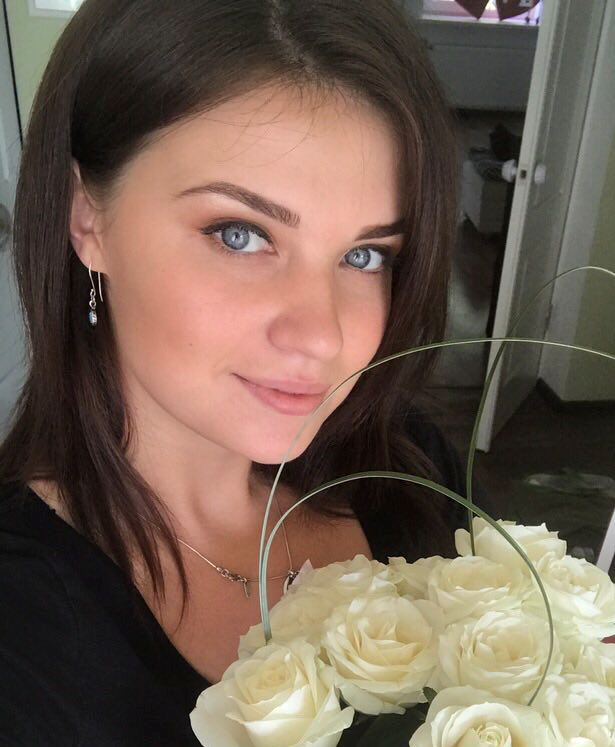

Фотограф
Славянск Святогорск Краматорск
Татьяна Сенькина
"Немного обо мне"
Как фотограф, всегда стремлюсь отобразить натуральность образа – эмоции, искренность и любовь. Продуманная композиция, подготовленный образ, и неподдельные чувства – обеспечивают возможность создать действительно завораживающие фотографии. Ценю, когда люди с которыми работаю, способны быть открытыми и искренними, передать свое внутреннее состояние и способны ответственно отнестись к моим рекомендациям. Во всех фотографиях я добиваюсь гармоничности, именно поэтому делаю акценты на деталях. В работе фотографом – я отдаюсь на 100% своему делу и ухожу с головой в творческий процесс, благодаря чему всегда получаются живые и настоящие эмоции на снимках.
